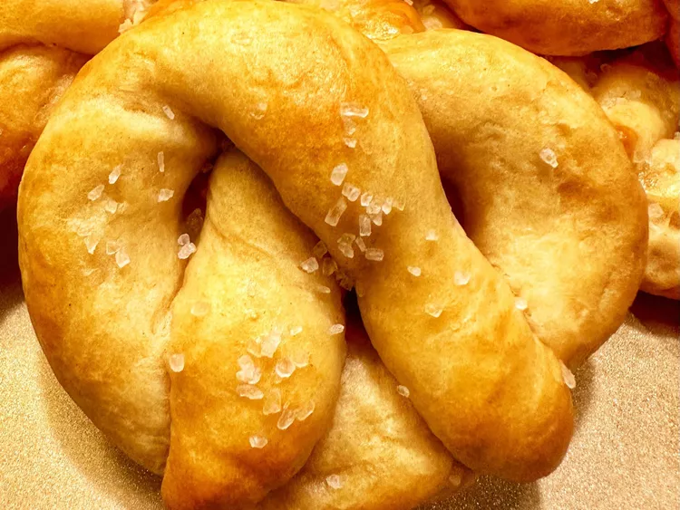

Pretzels

Crescent Roll Pretzels
A fun recipe to make. Homemade pretzels made with refrigerated crescent dough.
Ingredients
- 1 (8 ounce) package refrigerated crescent roll dough
- 8 cups water
- 3 tablespoons baking soda
- 1 small egg
- 1 tablespoon water
- 1 tablespoon butter, melted
- ¼ teaspoon coarse salt
Steps
- Preheat the oven to 400 degrees F (200 degrees C).
- Combine 8 cups water and baking soda in a large pot
- Start at the large end and roll each crescent roll triangle into a large rope
- Using a spider strainer, lower 1 pretzel at a time into the simmering water for 7 to 8 seconds.
- Bake in the preheated oven until golden brown, 12 to 14 minutes.
- Remove from oven.